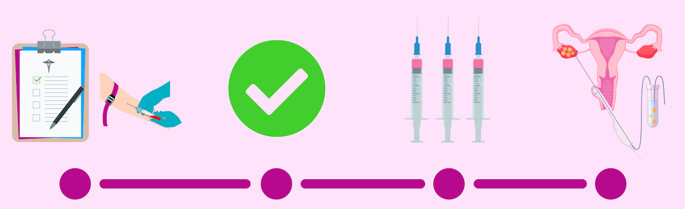

O que é?
É quando uma mulher doa um oócitos II para que outra mulher, que não pode ter filhos com recurso aos
seus gâmetas, os possa ter.
Processo:
- Indução da ovulação por estimulação hormonal da mulher, de modo a que a inseminação possa coincidir
com a ovulação. É frequente ocorrer o desenvolvimento de vários oócitos
- É recolhido esperma do homem (por métodos cirúrgicos ou por masturbação), nas duas horas anteriores
à inseminação
- O esperma é processado no laboratório. Os espermatozoides são separados dos outros componentes
ejaculados e concentrados num pequeno volume, composto pelos mais saudáveis e móveis.
- O processamento do esperma permite separar em duas frações os espermatozoides que contêm o
cromossoma X e o Y, permitindo a escolha do sexo do filho.
- A fração que contém os espermatozoides altamente móveis é colocada na cavidade uterina, usando um
cateter fino e suave.

Quando pode ser aplicada?
Causas que conduzem à doação de oócitos II:
- falhas sucessivas de fertilização;
- incompatibilidades entre o esperma e o muco cervical;
- motivos etiológicos e sociais;
- idade avançada;
- falência ovárica;
- alterações genéticas.
Requerimentos para doar oócitos II segundo a lei portuguesa
- idade superior a 18 anos e inferior a 34 anos;
- encontrar-se em pleno estado físico e mental;
- não ter antecedentes genéticos de risco;
- avaliação do risco genético das dadoras;
- despiste de doenças genéticas;
- exame ginecológico;
- estudo hormonal.
Recompensas
A Lei Portuguesa determina que a doação de oócitos II seja um processo voluntário, de carácter benévolo,
em que as dadoras são ressarcidas pelas despesas efetuadas ou prejuízos direta e imediatamente
resultantes das suas dádivas num valor máximo de 885€ (calculado de acordo com o dobro do Valor do
Indexante de Apoios Sociais em vigor) após a dádiva, nos termos fixados pelo Conselho Nacional de
Procriação Medicamente Assistida, de acordo com o previsto no n.º 3 do Despacho 3192/2017, publicado no
Diário da República n.º 75, 2.ª Série, de 17 de abril de 2017.
Para mais informação clique:
Doar oócitos II
Este procedimento aumenta a probabilidade de gravidez
múltiplas.